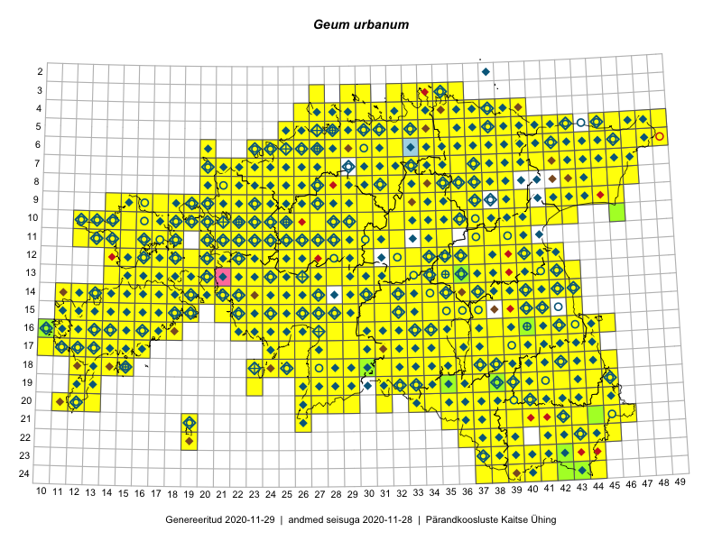

Geum urbanum
Uuendatud: 2016-12-02
Kaardile koondatud taksonid: Geum urbanum L.

Kaart põhineb 918 kirjel, neist vaatlusi 916 ja eksemplare 2. Taksonit on leitud 474 ruudust.
Kuvatud viited 20 esimesele andmebaasikirjele, ülejäänud PlutoFis
- Malle Leht: 2015-05-22: : ala
- Malle Leht: 2015-05-16: : ala
- Malle Leht: 2015-07-09: : ala
- Toomas Kukk, Eerik Leibak: 2015-08-09: 13-15: ala
- Thea Kull: 2015-07-07: 16-40: ala
- Rein Kalamees: 2015-06-08: 05-32: ala
- Rein Kalamees: 2015-06-05: 05-32: ala
- Malle Leht: 2015-08-02: : ala
- Peedu Saar, Toomas Kukk: 2015-05-28: 11-17: ala
- Peedu Saar, Toomas Kukk: 2015-05-28: 10-15: ala
- Peedu Saar, Toomas Kukk: 2015-05-27: 09-14: ala
- Peedu Saar, Toomas Kukk: 2015-05-27: 09-15: ala
- Peedu Saar, Toomas Kukk: 2015-05-27: 09-16: ala
- Toomas Kukk, Eerik Leibak: 2015-08-09: 14-15: ala
- Toomas Kukk, Eerik Leibak: 2015-08-08: 15-18: ala
- Toomas Kukk, Peedu Saar, Kersti Tambets, Sten Mander, Janika Sammasto: 2015-08-05: 17-14: ala
- Toomas Kukk, Thea Kull, Timo Luhamäe, Ott Luuk, Peedu Saar: 2015-06-28: 13-26: ala
- Toomas Kukk, Eerik Leibak: 2015-08-12: 10-17: ala
- Toomas Kukk, Eerik Leibak: 2015-08-12: 09-17: ala
- Toomas Kukk, Eerik Leibak: 2015-08-10: 09-14: ala